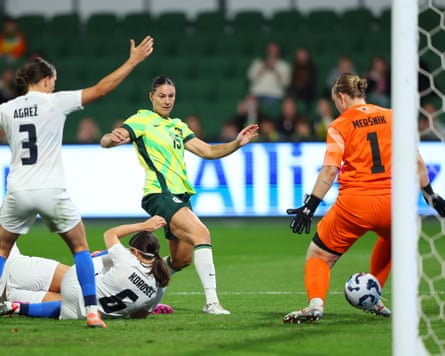

Holly McNamara has scored her first international goal but Joe Montemurro was left with plenty to ponder after his side scratched out an unconvincing 3-0 win over Slovenia in Perth in his first outing as Matildas coach .
Emily Gielnik’s third-minute strike in Thursday night’s match at HBF Park got the 15th-ranked Matildas off to a flyer, but it wasn’t until McNamara scored in the 86th minute that the win was safe.
Hayley Raso added the icing on the cake in the 87th minute when she waltzed through the midfield untouched before unleashing a strike from outside the box.
Although the 3-0 scoreline looked good on paper, the performance was far from slick in front of a crowd of just 8,678.
The under-strength Matildas were error-prone throughout, especially in defence where they attempted to play their way out of trouble at every chance.
Montemurro’s possession-based gameplan was always going to have teething problems, but the sheer amount of errors will be a huge concern.
Things started brightly when Gielnik stayed persistent in a goalmouth scrap to score the opener.
But the Matildas’ determination to retain possession at all costs led to numerous sloppy turnovers, many of which should have been punished.
Time and again, the Matildas opted to go backwards instead of finding the gaps further ahead – leading to problems whenever Slovenia were able to pick off the pass.
Emily Gielnik of Australia scores the team’s first goal past Zala Mersnik of Slovenia.Photograph: Paul Kane/Getty Images
One such turnover let Spela Kolbl off the leash in the 15th minute, with her floating cross glancing off the crossbar.
The Matildas’ best opportunities in the first half generally came when defender Ellie Carpenter found some space to charge forward, with her pace and physicality proving hard to stop.
The Matildas’ worst defensive error of the night arrived in the 52nd minute when Clare Hunt was unaware of an opponent bearing down on her as she attempted a short pass and was dispossessed. She was left breathing a huge sigh of relief when Slovenia striker Zara Kramzar fired straight at Matildas keeper Teagan Micah from close range.
It was Alanna Kennedy’s turn to commit a horror mistake 10 minutes later when her clumsy attempt to control the bouncing ball while running back to defend resulted in a costly deflection.
Hayley Raso of Australia takes a selfie with fans after the win over Slovenia.Photograph: Richard Wainwright/EPA
Slovenian substitute Nina Kajzba pounced on the mistake, with her strike forcing Micah to make a fine diving save.
McNamara, who has endured three knee reconstructions during her career, was a threat throughout the match.
The 22-year-old, playing her 10th international, finally received her reward when she put away a header at the far post after a sublime cross from Raso.
A minute later, Raso went on a run and curled in a precision strike from the edge of the box.
But the team’s struggles underlined how much they missed a host of their best players. Sam Kerr (knee), Mary Fowler (knee) and Tameka Yallop (leg) were all out through injury, while Steph Catley, Caitlin Foord, Katrina Gorry and Cortnee Vine are all on personal leave.
Australia face Slovenia again in Perth on Sunday, before taking on Panama in Bunbury on 5 July and in Perth on 8 July.